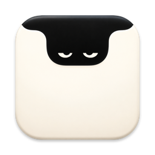
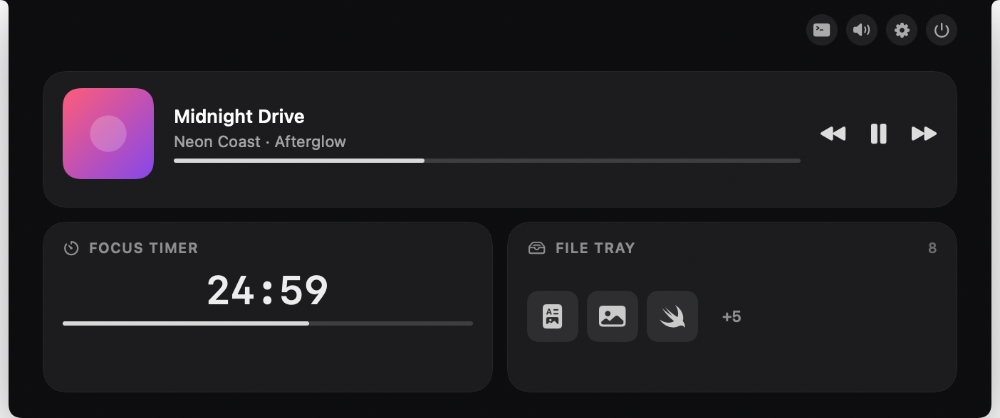

Hangover
Makes the notch on your MacBook useful. Point at it and it opens with your music, your day and your files.
Download for MacFree · Mac with Apple silicon · macOS 14 or later · updates itself

What's in it
- MusicPlay, pause and skip without leaving what you're doing.
- CalendarWhat's next today, with a heads-up before it starts.
- To-dosFrom Reminders, Notion or TickTick.
- Quick notesType a line, press Return, it's saved.
- File trayDrop files on the notch and drag them back out later.
- TimerA focus timer you can see at a glance.
- MirrorA camera check before a call, and a photo booth.
- WeatherToday and the week ahead.
Use coding agents like Claude Code or Codex? Hangover can show what they're doing and let you answer them from the notch. It's optional.
Opening it the first time
macOS stops any app that didn't go through Apple's paid developer program, and Hangover is free. You'll see a warning once. Here is what to click.
-
Download and move it
Open Hangover.zip from your Downloads, then drag Hangover into your Applications folder.
-
Open it, then click Done
Double-click Hangover. macOS shows a warning. Click Done. Don't move it to the Trash.
-
Click Open Anyway
Open System Settings, go to Privacy & Security, scroll down to Security and click Open Anyway. Confirm with your password or Touch ID. The button stays for about an hour.
-
That's it
From now on it opens like any other app, and it keeps itself up to date.
Is that safe? Only do this with a copy you downloaded from this page, and leave Gatekeeper on. All of Hangover's code is public, and you can read it or build it yourself. Apple explains these same steps in Open a Mac app from an unknown developer.
There's no account and no analytics, and Hangover has no server of its own.